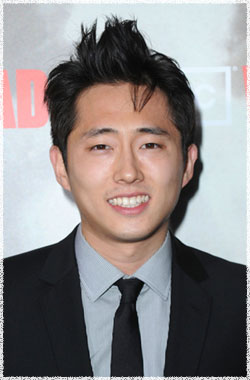

Стивен Йен
 Гленн (актёр Стивен Йен) - разносчик пиццы имеющий финансовые трудности. Трудности с финансами заставили его отправится к родителям за помощью. Попав в группу выживших в Атланте он работал в качестве искателя необходимых припасов. Позднее он помогал Рику в поставке оружия из Атланты.
Стивен Йен (Steven Yeun) родился в Сеуле, Южная Корея и вырос в городе Трой штат Мичиган. Стивен положил начало своей деятельности изучая психологию в Колледже Каламазу. После просмотра выступления импровизационной школьной группы, он решил переключить своё внимание на эту деятельность, и после окончания университета переехал в Чикаго для обучения в театре импровизации, в итоге получив возможность работать с Second City Theater выступая на различных шоу. Кроме того, он был частью нескольких комедийных скетч групп таких как: Stir Friday Night, Hands и Detective. После достижения своих целей в Чикаго, он переехал в Лос-Анджелес, где и проживает в настоящее время.
Стивен Йен недавно сыграл одну из главных ролей в одном из эпизодов популярного телесериала The Big Bang Theory (Теория большого взрыва). Также он снимался в роли Чейза в независимом кино My Name is Jerry, и в нескольких рекламных роликах для Best Buy, Apple и Milky Way. Принимал участие в озвучке персонажей компьютерной игры Crysis и её продолжения Crysis Warhead.
Наиболее известен по фильмам:
Ходячие мертвецы
Carpe Millennium
The Kari Files
Теория большого взрыва (Big Bang Theory)